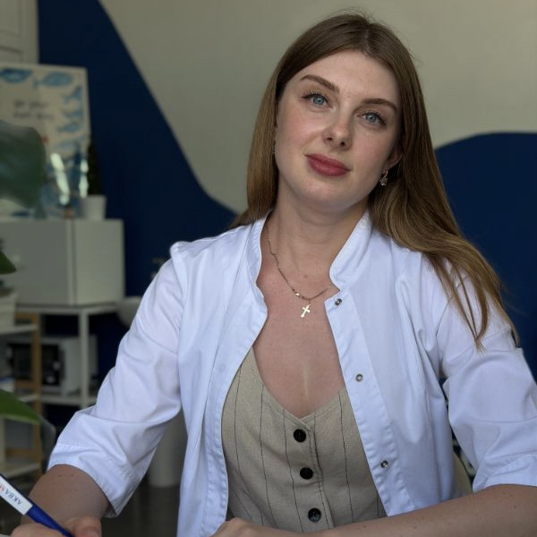

Ендоскопія, аудіометрія, якісна терапія та експертна алергологія у Прилуках. Точний діагноз без стресу для дорослих та дітей.

Тривалий нежить, закладеність носа, залежність від крапель або біль у горлі.
Сезонна алергія, висипання, свербіж очей, хронічний кашель без застуди.
ГРВІ, підвищений тиск, хронічна втома, потреба в професійній консультації терапевта.
Наші лікарі керуються принципами доказової медицини. Жодних зайвих призначень та турбота про кожного пацієнта.



Оберіть категорію, щоб дізнатися вартість та деталі
Комплексний первинний прийом лікаря при загальному нездужанні, ознаках ГРВІ, хронічних хворобах або проблемах із серцево-судинною та дихальною системами. Включає збір скарг, повний огляд, вимірювання тиску та розробку доказового плану обстеження й лікування.
Професійний прийом спеціаліста при сезонному нежиті, хронічному кашлі, висипаннях чи свербежі. Лікар допоможе виявити справжні тригери реакції, складе індивідуальну дієту або карту алергенів і призначить сучасну терапію.
Візит для оцінки ефективності раніше призначених ліків, детального розбору результатів лабораторних аналізів, ЕКГ чи інших досліджень, а також остаточного коригування схеми одужання.
Повторний огляд пацієнта після проходження призначених тестів чи початку протиалергічного лікування для фіксації динаміки та контролю стану слизових оболонок і шкіри.
Первинний інструментальний огляд вуха, горла та носа. Включає детальний збір анамнезу, встановлення діагнозу відповідно до міжнародних медичних протоколів та підбір м'якого і дієвого лікування.
Найбільш інформативний та безболісний метод ЛОР-діагностики за допомогою мікрокамери. Дозволяє виявити приховані запалення, аденоїди, поліпи у багаторазовому збільшенні. Пацієнт може особисто бачити стан слизової на моніторі.
Дистанційний прийом у форматі відео- або аудіодзвінка. Зручний спосіб отримати розшифровку аналізів, "другу думку" експерта, скоригувати поточний прийом препаратів або отримати первинні рекомендації, не виходячи з дому.
Плановий ЛОР-прийом для оцінки проміжних результатів лікування, закриття лікарняного чи коригування призначень без необхідності повторного ендоскопічного дослідження.
Контрольний ЛОР-огляд з повторним використанням відеоендоскопа. Потрібен для точного візуального підтвердження зменшення набряків, аденоїдних вегетацій або очищення пазух у динаміці.
Дистанційний повторний розбір стану пацієнта, перевірка результатів додаткових дообстежень та фінальне затвердження лікувального плану.
Повноцінний виїзд кваліфікованого лікаря додому до пацієнта в межах міста. Ідеальне рішення для маломобільних груп населення або під час гострого періоду хвороби з високою температурою.
Базове дослідження функції зовнішнього дихання. Вимірює об'єм та швидкість повітря, що видихається. Необхідне для діагностики астми, хронічного обструктивного захворювання легень (ХОЗЛ) та оцінки наслідків перенесених бронхітів.
Розширений дихальний тест із застосуванням бронхолітика (медикаментозна проба). Дозволяє виявити прихований бронхоспазм, оцінити оборотність обструкції та максимально точно підібрати інгаляційну терапію.
Ефективний і безболісний метод вакуумного очищення носових ходів та навколоносових пазух від густого слизу і гною. Швидко полегшує дихання та знімає набряки при гайморитах, синуситах та тривалих ринітах.
Механічна санація та вимивання патологічних казеозних пробок із мигдаликів антисептичними розчинами. Процедура значно знижує активність запального процесу та усуває неприємний запах при хронічному тонзиліті.
Створення персональних засобів захисту слуху за анатомічним зліпком вашого вушного каналу. На вибір: аква-беруші для плавання, шумоізоляційні беруші для комфортного сну або професійні фільтри для музикантів і військових.
Маніпуляція за методом Політцера для відновлення вентиляційної та дренажної функції слухової труби. Допомагає позбутися відчуття закладеності та рідини у вухах після перенесених отитів або перельотів.
Місцеве зрошення та введення протизапальних, антибактеріальних або пом'якшувальних розчинів безпосередньо на слизову оболонку гортані та голосові зв'язки за допомогою спеціального шприца. Ефективно при ларингітах та втраті голосу.
Стерильне взяття біоматеріалу зі слизових оболонок ЛОР-органів для подальшого лабораторного аналізу. Дозволяє ідентифікувати збудника інфекції та визначити його точну чутливість до різних антибіотиків.
Швидкий експрес-тест (Стрептатест) для виявлення бета-гемолітичного стрептококу групи А безпосередньо під час прийому. Результат готовий за 5-10 хвилин, що допомагає лікарю миттєво визначити необхідність призначення антибіотиків.
Спеціалізований прийом лікаря, спрямований на детальне вивчення патологій слухової системи пацієнта, визначення причин приглухуватості, підбір сучасних слухових апаратів та розробку програми адаптації.
Точне високотехнологічне дослідження гостроти слуху на різних звукових частотах. Результат фіксується у вигляді детального графіка (аудіограми), який є ключовим документом для встановлення ступеня зниження слуху.
Візит для оцінки динаміки лікування, контролю налаштувань цифрового слухового апарата, додаткової консультації за результатами призначених обстежень чи коригування терапії.
*Умова акції: Професійний підбір моделі, програмування та індивідуальне налаштування слухового апарата під вашу аудіограму здійснюються абсолютно безкоштовно, за умови, що всі попередні необхідні обстеження слуху та консультація сурдолога були пройдені у нашому медичному центрі "OtoTime" і придбаний слуховий апарат був теж на основі рекомендацій наших фахівців.
Заплануйте свій візит заздалегідь, щоб уникнути будь-яких черг.
Виберіть зручний напрямок, потрібного лікаря та час у нашій системі.
Перейти до запису